"I was fascinated, drawn to them," she recalls.
Shortly after moving to the place where lambs beckoned her, Child obtained seven or eight Suffolk-based ewes. The sheep produced sparse, white, medium-weight wool, typical of mutton-type breeds in the region. It wasn't quite what Child had in mind.
Mary Child "skirts", or removes, less desirable wool from the edges of a recently sheared fleece.
Determined to produce dense, soft, naturally colored fleeces, she added to her flock a black, mostly Corriedale ram and a purebred Lincoln ram to improve the wool on future lambs.
Corriedales produce a soft, dense, medium-long fleece with a medium-tight crimp grading in the mid-50s (see " Wool Grades "). Lincoln fleeces yield a lustrous, extremely durable, long-staple fiber, great for specialty items such as socks or carpets.
Although Lincoln wool grades only in the low 40s, handspinners generally favor it over 50-grade Suffolk wool, which can be harsh or brittle and tends to handle poorly.
"Lincoln adds luster and strength to Corriedale wool," advises Child, who today shares six acres with 14 ewes and four rains. In a drier, less fertile area, six acres might limit her to a flock of six or less animals. In a more lush area, or with intensive rotational grazing, she might pasture 25 to 30 sheep. In all cases, well-drained sloping land reduces hoof and worm problems, and is an important first step in keeping a healthy herd.
In general, sheep thrive on good quality pasture or hay, clean water and a sheep mineral salt. Mineral salt intended for cattle contains more copper than sheep usually need and can be toxic. Most sheep minerals contain higher levels of selenium, which is necessary to metabolize vitamin E, and prevent serious muscle-related diseases.
Sheep that graze on pasture with selenium - deficient soil are prone to prolapse (of uteruses or rectums) and may produce stillborn or weak lambs with poor lung capacity. In some regions, feeding miner also containing even the maximum legal level of selenium isn't enough. Supplements of selenium/vitamin E are available from your veterinarian, but be sure not to overdo it. Too much selenium can have the same effect as too little.
Sheep love alfalfa... too much. If suddenly given free access, they'll gorge and possibly die from bloating. Some shepherds graze alfalfa, but most store it for winter as a high-protein (about 17%) hay. Corn provides great energy, but is only about 8% protein. Corn-based feeds sold in 100-pound sacks at farm stores incorporate soybean meal (about 42% protein) and other protein-rich ingredients. Sheep do well on 10% to 12% protein; lambs need more. In cold weather and late pregnancy, ewes need extra energy. High-quality pasture or hay normally provides adequate energy and protein. Ewes carrying twins or triplets often run out of rumen room for hay and may need grain to supplement their diet.
Although diet and genes determine basic wool quality, trauma can severely affect it. Sudden changes in feed, routine, surroundings, a caretaker or flock members can cause stress, which in turn can cause a wool "break." Breaks, or weak points, in a fleece mark traumatic events as clearly as rings mark the age of a tree.
At left, a small barn with built-in feeders and solid sides facing prevailing winds provides adequate protection for Child's sheep. The open sides reduce moisture buildup and ammonia fumes, which can cause problems in more tightly sealed structures.
To protect the value of her wool, Child avoids stressing her sheep. "You don't take them off a low-protein diet and suddenly put them on a high-protein diet." While a bag of sheep feed may provide the same nutrition as alfalfa/orchard grass hay, you can't abruptly substitute one for the other without disrupting the animal's digestion.
Child also guards her investment against external threats like harsh weather and debris. Sheep unwittingly collect in their fleeces sandy soil, burdock, briars, hay and more. This dirt and vegetable matter must be removed, and tangled fibers must be straightened before wool can be spun. To accomplish this, commercial processors mechanically scour and card wool.
D one by hand, it's quite a job. Thus handspinners, particularly those who like to spin "in the grease" (preferring the rich lanolin of unwashed wool), will pay top dollar for a quality fleece in prime, clean condition.
Child's answer? Jackets.
Available in canvas, plastic or plastic-coated fabric, jackets (also called sheepcovers) keep sheep clean and may help to guard against the sun's ultraviolet rays, thereby reducing fading at the tips of colored wool.
About the only minor downside to jackets is that they can rub the fleece and cause it to become slightly tippy, with fiber ends twisted together or matted. The easy solution is "flick carding," a quick action with a carding comb over the fleece's surface that unlocks and straightens tips.
Shepherds report that wool grows more under jackets, and studies done at the University of Wyoming support this idea.
Wool Glossary
BREAK: weak points in a fleece caused by trauma CARD: wire-toothed device used to untangle wool COARSE: wool with larger diameter fibers, generally scratchy to touch
CRIMP: Wave or natural zigzag of wool fiber that allows itto stretch and
spring back. Combing or carding wool stretches the crimp. Water triggers crimp "memory" and makes it spring back. Heat increases water's effect.
FINE: wool with small diameter fibers, generally soft to touch
HANDLE: how the wool feels to a spinner or weaver
IN THE GREASE : wool
straight off the sheep, without processing
LUSTER: sheen caused by lanolin in wool
SHRINK : weight and volume lost through washing/ processing wool
STAPLE: length of wool fiber TIPPY: term used to describe fleece on which fiber tips are twisted together or slightly matted
Jackets, or sheepcovers, help to keep wool clean, a must if fleeces are to be marketed to handspinners.
Dogs: They can be a sheep's best friend... or worst enemy. That sweet fur ball sitting at your feet can transformgiven access and opportunity - into a stealthy sheep slayer.
"Not my doggie," you say? That's what I thought when a warden informed me that my dog had tried to kill a neighbor's sheep. "That's several miles away," I insisted, "and besides, Laddie has never bothered my herd." True as that was, it turned out that Laddie was guilty as charged. To protect neighboring flocks, I've taken to confining him at night and whenever we're gone from home.
Unlike bears and coyotes seeking easy meals, dogs kill sheep for fun. Until you've witnessed it firsthand, it's hard to fathom the carnage they can cause. I won't soon forget the evening that thundering sheep hooves and loud bleating prompted my husband to fire a shotgun into the air. The dogs-all pets-never barked but moved to the next farm, where, the following morning, I saw the aftermath: 42 dead or dying ewes. Only two members of the flock had escaped unscathed.
Next to you, the best protector for your sheep is, ironically, a dog. Not a pet, but a working guard dog such as a Maremma or Great Pyrenees (for more on selecting a working breed dog, see " The Homestead Hound "). Raised with your sheep from puppyhood, a guard dog will bond with and defend the flock against straying pet dogs. Guard dogs (and/or llamas and donkeys) can also be used to protect flocks from coyotes and bears where these wild predators are a problem.
Hootie-Crow, Child's working Border collie, fetches the ewes from the barn on shearing day.
It's an early spring morning and Sarah Beamer, a professional shearer, has arrived at Child's homestead ready for work. Child commands Hootie-Crow, her working Border collie, to fetch the ewes in one barn and bring them to another, where there's electricity to power Beamer's shearing machine - a high-volume tool with a clipper head at the end of a long, flexible arm connected to a freestanding motor. Like most professionals, Bearner prefers this type of shearer to the self-contained units that resemble electric barber clippers. "The handheld units are okay for your own small flock, but with the motor in the unit, they get hot and are heavy," explains Beamer.
Equipped with the right cutters, the shearer's remaining needs are simple: someone to bring in sheep one at a time; a level surface free of hay; and dry animals that haven't eaten for several hours. "You can't shear sheep if they're wet," says Beamer, "and it makes them uncomfortable when you set them up and their stomachs are full."
Attached to the right clipper head, this 13-tooth, flared comb is the ideal tool for shearing fine wool.
How do you locate good shearers and what can you expect to pay? Ask someone who owns sheep and be prepared to describe yours. While most professionals charge per head, the amount can vary tremendously, depending on your location, number of sheep and wool type. A shearer wanting $2 a head for zipping through 100 five-pound Suffolk fleeces in eight hours may not have the correct cutter combs or patience to remove 15-pound fine wool fleeces without "second cuts" - even if you triple her normal charge. (Second cuts, a handspinner's curse, occur when a shearer goes back over an area after the original stroke. The resulting short fibers make wool fuzzy" and very difficult to spin.)
Most sheep are sheared in the spring, but not all. Some are sheared before lambing. Wool-less sheep seek shelter more quickly on cold, wet days, taking the lambs with them. Plus, lambs easily find their sheared mama's teats.
Most wool grows four to six inches a year, a desirable fiber length. Leaving wool long through summer can add to insect and maggot problems.
While it may be tempting to save a dollar and shear your own sheep, be warned: Shearing is a complex, laborintensive, backbreaking skill that sends most wool growers scrambling for a good position on a professional shearer's docket. Picture yourself catching a 170-pound ewe and convincing her to hold still while you remove her winter coat with a quick-moving sharp object. It's certainly possible to shear sheep with hand-powered shearing scissors, but whether you'll come away with solid, usable fleeces is another matter. And one snipping slip can injure the shepherd or kill the sheep.
It may be best to limit your cutting to the "skirting" table, where you'll cull, or skirt, the short wool from around your fleeces' edges. Belly and leg wool scraps can be used for quilt batting or turned into felt. The remaining fleece, comprised of back and some neck wool, contains the longest, finest and most valuable fiber.
All wool sells in the grease, unless a shepherd decides to add value by producing a product such as roving or felt.
Handspinners will pay $6 to $12 per pound for prime raw fleeces, with natural colored wools commanding higher prices than white. This is quite the opposite of the commercial bulk market, where easily dyeable white wool is preferred and purchased in tightly packed, 200-pound sacks. Bulk wool produced in the U.S. generally comes from well-muscled, quickgrowing market lambs raised for meat rather than wool quality.
If wool (and not meat) is to be your primary aim, you'll want to concentrate your efforts on producing the quality fleeces handspinners favor. Finding buyers is largely a matter of getting the word out. Once you earn a reputation for providing quality wool, handspinners will return for your fleeces year after year. Many growers sell their wool on the Internet or at festivals. At one time Chill participated in wool and fiber shows to market her fleeces, but in recent years customers like Barbara Gentry have come to her.
Gentry keeps 30 American Cormo sheep. She spins, weaves, knits and dyes wool, while teaching others how to do the same at her on-farm shop, Stony Mountain Fibers, in Charlottesville, Virginia.
Why does Gentry occasionally buy a fleece from Child if she has her own? Cormo wool, with a four- to five-inch staple, a 58-to 60-fiber count and a tight crimp, is white. Child's fleeces range from cream to pale pewter to silver to black to chocolate to variegated. Plus, notes Gentry, "Mary's fleeces are very healthy, with no breaks."
Unless you sell your fleeces straight off the sheep's back, you'll likely have to store them for a bit. You can keep wool in any porous material, including woven plastic or paper, but be sure it is sealed against or kept away from moths and bees. Bees love to nest in wool and moths lay eggs in it so larvae have plenty to eat.
Different sheep breeds not only produce different wool, but exhibit different levels of feed efficiency, disease resistance, hardiness, longevity, milk production and flocking instinct. Breeds also display distinct personalities.
Which should you choose? First, read about sheep husbandry, breeds and their traits, then visit some sheep, talk to shepherds and go to a fiber festival or wool show. Before sheep shopping, think carefully about what's important to you. If a good temperament is what you want, try Southdown sheep, whose tempers match their gentle soft gray faces. They're excellent mothers but are also the smallest breed, produce the least amount of wool and don't tolerate heat. Romneys and Lincolns display even tempers, but Romneys are decidedly average in other ways and Lincolns tend toward the less hardy. Merinos produce huge quantities of very fine wool and are great mothers, but you'd better know how to handle sheep before you try to maneuver them!
I have been raising sheep in Blue Grass, Virginia, for the better part of 25 years. For 15 years, like farmers around me, I ignored wool and concentrated on market lambs. Ten years ago, I looked at the wool, screamed, and bought a Rambouillet ram. Today, my 60 or so sheep are a complex cross of Suffolks and Rambouillets with piebald genetics. They look like Holstein cows with white wool.
Suffolks milk well, are prolific and grow quickly, but tend to be short-lived, not particularly hardy and an embarrassment to wool. Rambouillets added fine, dense wool and extended the useful life of my ewes from six or seven years to 10 or 11 years. Hybrid vigor can make the total package better than the sum of its parts.
Recently I've been breeding my piebald rams with totally unrelated piebald ewes to produce consistent halfSuffolk/halfRambouillet lambs. Detailed records, both on paper and on the sheep (as numbered and color-coded ear tags) make it possible.
Note that to produce solid, dark wool, sheep must carry two recessive genes for color-black/gray or brown-and will appear black unless both genes code for brown. Sheep that appear white may harbor a single recessive black or brown gene and not be "pure" white at all.
To locate sources for a particular breed, contact the breed's purebred association or look in sheep publications (see " Sources "). Many breeders list sheep for sale on the Web. If you want a few sheep for wool and don't want to raise lambs, wethers (castrated rams) may suit you. You may also find crossbred sheep fit your needs.
Before purchasing sheep, check udders for lumps (a sign of mastitis); scrotums for large solid symmetrical testicles (indicates good health and fertility); feet for trimmed hooves (either the result of great care or foot rot); and teeth for age (one set of adult teeth comes in annually until a sheep is four years old; after age four, teeth begin to wear down). If you fail to see front teeth on the upper jaw, don't think a sheep has lost them; it never had any.
Although livestock markets auction sheep, purchasing them in this way carries a two-prong risk. First, someone else wanted to get rid of them - you should ask why. Second, when you bring an animal home from a livestock market, it can bring diseases it may have caught from the other animals at the show.
Barbara Gentry, shepherd and spinner, weaves a wool rug on a drugget, or barn loom.
Some shepherds start a flock with orphan lambs. Farmers with large flocks commonly give away or sell "extra" newborn lambs, particularly triplets from mothers with only enough milk for two. These orphans - also called "pet" or "hammer" lambs - must be bottle-fed small amounts of milk every four hours, night and day, until they can digest more food less often. Large-scale farmers don't have enough time to act as a surrogate mother and help 100 ewes have 150 to 200 lambs in two weeks.
Pet lambs get very tame and attached to whoever feeds them. "Stepmothers" can hardly walk though a field without tripping over adoring pets. As adults, the 130- to 225-pound ewes can unintentionally knock their object of affection (you) flat on the ground. If, on the other hand, a 150- to 300-pound "pet" ram knocks you down, it's no accident. He wants to be the boss. Not all rams are aggressive, but never turn your back on one-not even one named "Sweetiekins."
I recommend keeping a minimum of two or three sheep (a few good wool producers will provide enough fiber for all the sweaters you can use, plus stuffing for a quilt or two). Keep more sheep and you'll have more wool to sell. Keep a lone sheep and it will end up inside your house, perhaps sleeping behind the stove with the cat. Remember, these are social animals. If you don't give them a flock, they'll find one.
Read more about livestock and HOMESTEADING. www.motherearthnews.com
SOURCES
BOOKS
Raising Sheep the Modern Way (1989);
Spinning and Weaving with Wool (1991); Turning Wool into a Cottage Industry (1991) , all by Paula Simmons, Storey Books, Pownal, VT
Complete Herbal Handbook for Farm and Stable, by Juliette De Bairacli-Levy, Faber & Faber, 1991.
Veterinary Book for Sheep Farmers, by David C. Henderson, Farming Press Books, U.K., 1990
(U.S. distributor: Diamond Farm Enterprises, Box 537, Alexandria Bay, NY 13607)
MAGAZINES
Sheep!
P0. Box 10 Lake Mills, WI 53551 www.sheepmagazine.com
The Shepherd
5696 Johnston Road
New Washington, OH 44854-9736
Spin-Off
Interweave Press, Inc.
201 E. Fourth Street Loveland, CO 85037-5655 www.interweave.com
Handwoven
Interweave Press, In c. (see above)
WEB SITES
Maryland Small Ruminant Page
www.intercom.net/user/sschoen/
maryland.html
The Spinners' and Weavers' Spring
Housecleaning Pages
homepages.together.net/
~kbruce/kbbspin.html
Ewool
ewool.iwarp.com
Sheep on the Web!
members.aol.com/culhamb/
sheepweb.htm
The Oklahoma State University Breeds of Livestock Project
www ansi.okstate.edu/
BREEDS/SHEEP/
SHEPHERDS
Mary Child
HC 63, Box 75
Moyers, WV 26815
e-mail: maryc@access.mountain.net
(Lincoln/Corriedale sheep, fleeces)
Barbara Gentry
939 Hammocks Gap Rd. Charlottesville, VA 22911
e-mail. stonymtn@aol.com http://members.aol.com/
stonymtn/smf.html
(Cormo sheep, fleeces; teaches spinning, weaving, knitting & dyeing; sells wool, other fibers and related supplies)
Michele Mangham
Mangham Manor Wool &
Mohair Farm
901 Hammocks Gap Rd. Charlottesville, VA 22911
e-mail: MangManor@aol.com (Moorit and gray starter flocks, fleeces, finished wool items)
Martha McGrath
Deer Run Sheep Farm
HC 72, Box 14D
Franklin, WV 26807
e-mail: deerrun@access.mountain.net http://www.agdomain.com/web/
blacksheep/
(Colored and white Coopworth/Bluefaced Leicester sheep & fleeces)
|
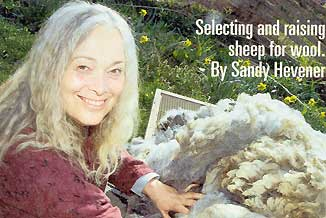 Sarah Beamer, a professional shearer, makes several smooth body length cuts before the fleece starts to roll off the ewe in a single piece. Below left: Beamer removes another ewe's heavy winter coat. |
|
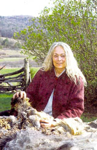 |
|
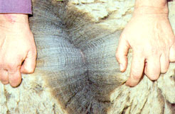 |
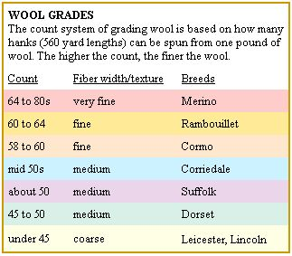 |
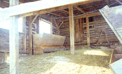 |
|
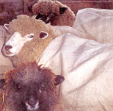 |
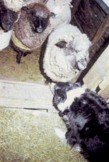 |
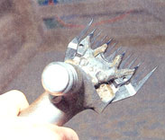 |
|
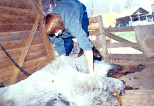 |
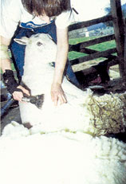 |
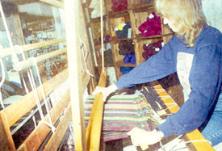 |